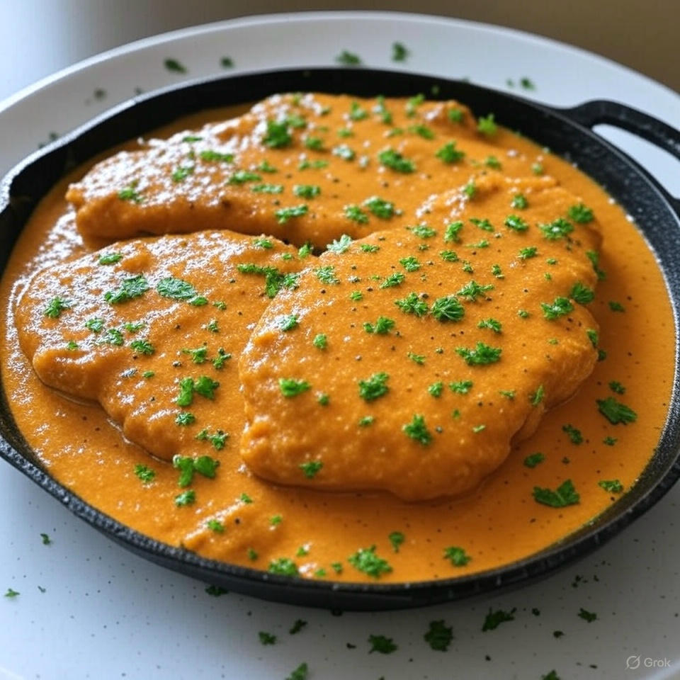

Home
Indian Butter Chicken

Description
A simple and delicious butter chicken made with tender chicken cutlets or flattened breasts, cooked in a rich Kroger butter chicken sauce. This easy recipe delivers authentic flavors with minimal effort, perfect for a quick yet satisfying meal.
Ingredients
- Chicken cutlets (or chicken breasts to flatten with a mallet)
- Salt (for seasoning)
- Kroger butter chicken sauce
- Pepper (to taste, optional)
- Cilantro (optional, for garnish)
Steps
- Prepare the chicken by using cutlets or flatten chicken breasts with a mallet.
- Season the chicken with salt on both sides.
- Heat a skillet over medium-high heat and brown the chicken on both sides.
- Add the Kroger butter chicken sauce to the skillet and let it sit for a few minutes.
- Reduce heat and cook until the sauce thickens, then remove from heat and let cool slightly.
- Serve topped with pepper to taste and/or cilantro if desired.